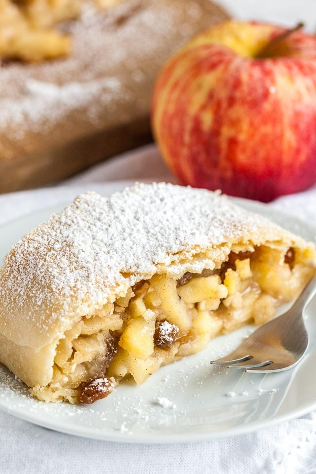

Apple Strudel Recipe

Description
Our easy apple strudel recipe is a warming autumnal pudding, full of fruit and
spices. Serve up golden brown slices filled with caramelised apple and
walnut
Ingredients
- 100g golden granulated sugar, plus extra
- Seeds scraped from 1 vanilla pod
- 4 Granny Smith apples, peeled and diced
- 25g each currant and sultanas
- 1 tsp ground allspice
- 1 tsp ground nutmeg
- 85g walnuts, chopped
- 6 large sheets filo pastry
- 50g butter, melted
- 200ml tub crème fraîche
Steps
- Heat oven to 200C/180C fan/gas 6. Heat 75g of the sugar and the vanilla
seeds in a medium, heavy-based frying pan over a medium-low heat for 5-8
mins, or until golden brown and caramelised. Add the apples, currants,
sultanas, allspice, nutmeg and walnuts, then cook for 10 mins or until the
apple is tender. Remove the apple mix from the pan with a slotted spoon and
cool to room temperature.
- Line two baking trays with baking paper. Place a sheet of filo on one of
the trays, then brush lightly with the melted butter. Sprinkle over 1 tsp
sugar. Repeat the process until there are 3 layers of filo. Repeat with the
remaining sheets of filo on the second tray.
- Divide the apple mix along the shorter edge of both pastry sheets and
gently roll into 2 logs, tucking in the ends as you go. Brush with melted
butter and sprinkle over 1 tbsp sugar. Can be made up to one day ahead,
kept chilled. Bake for 25 mins, or until the pastry is golden brown and
crisp. Let cool slightly, then cut each strudel into 6 diagonal slices.
Serve two slices each with a dollop of crème fraîche on the side.